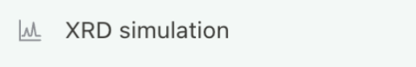
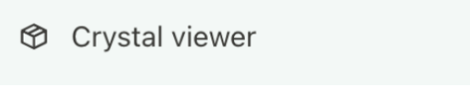

GANJIANG / USER MANUAL
GanJiangUser manual.
From preparing your data to saving your results.
A clear path through every step of your analysis.
BEFORE YOU BEGIN
One pattern. One task.
Confirm your settings, then keep a record of your results.
PREPARE YOUR DATA
Files & measurement conditions
Prepare the inputs for your task and record the actual measurement conditions before configuring the analysis.
| Function | Required inputs |
|---|---|
| Phase identification | One observed pattern; elements and formula hints are optional. |
| Identification + refinement | One observed pattern; refinement settings are confirmed later. |
| Known-phase refinement | One observed pattern and a CIF for every phase to refine. |
| PDF card calculation | One observed pattern and at least one CIF. |
| XRD simulation | One or more CIF / MCIF files; no observed pattern is needed. |
| Crystal viewer | One CIF. |
Pattern formats
Submit one observed pattern per task. If an instrument-specific file cannot be parsed, export a two-column CSV or XY file from the instrument software. Renaming the extension does not convert the file.
Two-column text typically contains 2θ in degrees and intensity, with one sample per row. Keep angle and intensity aligned, and state whether the data has headers, background subtraction, smoothing, normalization or Kα₂ removal.
Measurement conditions
Record the sample ID, radiation source or wavelength, horizontal-axis units, scan range and instrument parameter file, if available. Software defaults are not evidence of the measurement conditions.
START YOUR FIRST TASK
Create a task & confirm parameters
- Select New task, then choose the required function on the left.
- Use + in the task input box to attach the specific files. Check their names; do not upload a whole test-data archive as one pattern.
- Enter the analysis goal, sample ID and known conditions in the same box. You can extend the prefilled request. The model selector does not set the phase-search model or radiation.
- Send the request. When the confirmation form appears, check the task type, single/multiphase mode, search channels, elements and formula fields.
- The final values in the confirmation form govern the calculation. Submit the form after editing it; closing or cancelling it does not start computation.
- Check execution messages. If the task is still awaiting plan confirmation, submit the form instead of uploading the same files again.
Continue the original task when adding information for the same sample. Create a new task for another sample or a different set of settings, and include the sample ID and conditions in its name to keep outputs distinct.
IDENTIFY A PHASE
Single-phase identification
Search for candidate crystalline phases from one observed pattern without structural refinement. Unknown-phase identification does not require a CIF. Leave the formula field empty for tests without formula hints.
| Option | Purpose |
|---|---|
| Single phase | Search under a single-phase assumption; do not remove unexplained observed peaks on that basis. |
| XMatcher | Pattern-based candidate matching; available without element constraints. |
| XQueryer-LW | Search using supplied elements; valid element constraints are required. |
| Both channels | Select both models in the single-phase form and check their actual execution status. |
| Unknown phase count | Try single-phase identification first; move to the multiphase workflow if the result is inadequate. |
Identify a single phase in the attached pattern without refinement. Known elements: Ca Fe Si O No formula hints. Use XMatcher and XQueryer-LW in the single-phase configuration. Radiation: [actual conditions]. Preprocessing: [actual treatment or none].
Check the result
Check channel success before reviewing candidate rankings and validation. Top 1 means the highest-ranked candidate, not an automatically confirmed phase. Without a candidate list, there is no Top 1 to select.
RESOLVE A MIXTURE
Multiphase identification
Multiphase means multiple crystalline phases in one sample pattern, not multiple uploaded patterns. Select Phase identification, attach one mixed pattern and choose multiphase mode in the form. Use unknown phase count when the count is not established.
The multiphase form offers these two channels. Keep both default channels or select one for a controlled test. Candidates are pooled for validation. Single-phase XQueryer-LW and XMatcher selections do not replace the multiphase settings.
Enter elements separately from formulas
| Field | How to enter it |
|---|---|
| Elements | Enter unique known symbols, e.g. Ca Al Si O Ni S. Do not guess unknown elements; identify a partial list as incomplete. |
| Formula hints | Leave empty if unavailable. For known phases, enter one formula per phase, separated by ASCII commas, semicolons or newlines. |
| CIF | For element-constrained identification without structure hints, upload only the pattern and retain CIFs as reference answers. Attach them for known-phase refinement. |
Identify multiple phases in the attached pattern without refinement or formula hints. Known elements: Ca Al Si O Ni S Use XMatcher-AutoMix and XDecomposer in the multiphase configuration. Radiation: [actual conditions]. Phase count: [unknown or established count].
FROM CANDIDATES TO FIT
Identification + refinement
Identify phases first, then test how candidate structures fit the observed pattern. Supply one pattern and measurement conditions; known elements support the identification stage. Check identification and refinement results separately.
- Select Identification + refinement, attach the pattern and specify single phase, multiphase or unknown phase count.
- Submit the initial identification form after checking elements, formula hints and search channels.
- Review the candidates and their evidence. When the refinement form appears, check the candidate phases or structure files to be used.
- Select an available refinement engine and specify the instrument file, if any, fitting range, parameter constraints and cycles. Do not release all atomic parameters merely to improve the fit.
- Confirm refinement and keep the task session. If communication is interrupted, check the original task before starting the same calculation again.
- Review calculated and observed curves, differences, fit metrics, structure files and validation status, then download the task files.
Identify phases in the attachment, then refine evidence-supported candidates. Sample: [ID]. Elements: [known elements or unknown]. Radiation: [actual conditions]. Prioritize scale, background and unit-cell parameters; keep atomic occupancies fixed. Provide the whole-pattern fit, difference curve, fit metrics and final validation status.
REFINE A KNOWN STRUCTURE
Known-phase refinement
For samples with existing structure models, skip phase search and refine the supplied CIFs directly. Attach one CIF for a single phase or one per phase for a mixture, together with one complete observed pattern.
- Select Known-phase refinement and use + to attach the pattern and all CIFs.
- Check the formula, cell and atomic information in every CIF. Avoid duplicate structures and omitted phases.
- Confirm the phase mode, structure list, engine and instrument configuration. Use the corresponding
IRFfile when supplying a FullProf instrument file. - Specify which parameters to fit. Start with scale and background, then add cell and profile parameters as supported by the data.
- Submit and check that every phase entered the model. Retain failures; a partially completed task is not a fully successful one.
| Parameter | Purpose & checks |
|---|---|
| Scale factors | Control phase intensities; they are not directly equal to mass fractions. |
| Background & profile | Fit the baseline and peak profiles; do not use background to hide a missing phase. |
| Zero shift & unit cell | Affect peak positions; consider parameter correlations. |
| Coordinates & occupancies | Affect structure factors; adjust only when supported by data and chemistry. |
COMPARE REFLECTIONS
PDF card calculation
Supply one observed pattern and one or more known CIF structures to calculate theoretical reflections and compare them with observed peaks. This function does not perform unknown-phase identification or Rietveld refinement.
- Select PDF card calculation and attach the pattern and all phase CIFs.
- Check filenames, wavelength and peak detection/matching parameters in the form.
- Submit and review the theoretical reflection table and observed peak table separately, including assignments and unmatched peaks.
- Retain phase names and sources when changing visibility, colours or annotations. After editing assignments, export the current version using the report controls.
| Parameter | Initial value | Meaning |
|---|---|---|
| Wavelength | 1.5406 Å | Radiation for theoretical positions; match the experiment. |
| Matching tolerance | 0.20° 2θ | Allowed observed-to-theoretical position difference. |
| Intensity threshold | 10% | Relative intensity threshold for observed peaks. |
| Minimum distance | 0.08° 2θ | Minimum separation between detected peaks. |
| Prominence | 0% | Required prominence above the surrounding baseline. |
Initial values are software defaults and must be checked for the dataset. Download theory.csv, peaks.csv, observed.csv, parameters.json or the result bundle. Initial files contain automatic assignments; later manual edits require a new export.
FROM STRUCTURE TO PATTERN
XRD simulation

Calculate theoretical powder diffraction from CIF or MCIF files without an observed pattern. Upload one or more structures to compare component patterns and their total.
- Select XRD simulation and attach the structures; separate files represent separate phases.
- Check wavelength, 2θ range, sampling step, peak shape, width and mixing parameter in the form.
- Submit and inspect parsing status for every file. If some files fail, only the successful phases are completed.
- Adjust visibility, colour, relative display scale and width in the panel. Choose total, overlay or stacked views and inspect the HKL peak table.
- Use the panel CSV or SVG export for the current view. Changing wavelength, range or sampling step requires a newly confirmed calculation.
| Setting | Initial value | Purpose |
|---|---|---|
| Wavelength | 1.5406 Å | Cu Kα₁ theoretical calculation |
| 2θ range | 10–90° | Simulation interval |
| Step | 0.02° | Angular interval for sampled curves |
| Shape | pseudo-Voigt | Peak profile function |
| FWHM | 0.18° | Initial peak broadening |
| Lorentzian fraction η | 0.5 | Profile mixing parameter |
Initial downloads include peaks.csv, pattern.csv, parameters.json and a ZIP, using the confirmed settings.
LOOK INSIDE THE STRUCTURE
Crystal viewer

- Select Crystal viewer on the left to open the structure viewer.
- Choose one
.ciffile using the file picker, or drag it into the drop zone if one is provided. - Wait for parsing and verify the current filename and structure information. Load the correct CIF when switching samples so the previous model is not mistaken for the current one.
- Use the view controls to inspect atomic arrangements. Return to XRD simulation when you need a diffraction pattern.
Read elements from a CIF
Open the CIF in a text editor and search for _chemical_formula_structural, _chemical_formula_sum or _atom_site_type_symbol. Element symbols identify species; numbers give stoichiometry. An expanded cell formula may have larger numbers than the simplest formula but contains the same element types.
| Example formula | Elements |
|---|---|
| Ca₃Al₂(SiO₄)₃ | Ca Al Si O |
| NiS | Ni S |
| Union of the two phases | Ca Al Si O Ni S |
If parsing fails
Confirm the file is extracted and is actually a CIF, and check that cell parameters and atomic sites are complete. Renaming a CSV pattern or an image does not make it a structure file.
KEEP A TRACEABLE RECORD
Task status & saving results
Check execution status first
| Status or message | Meaning & next step |
|---|---|
| Awaiting plan confirmation | Computation has not started. Complete and submit the current parameter form. |
| Running or pending analysis | This is not a final conclusion. Check execution messages and the latest progress. |
| 0 reviewed; unreviewed > 0 | Candidates exist but lack a validation conclusion. If this persists after completion, retain records and investigate validation. |
| XMatcher call failed | The search channel failed. Inspect the detailed error; this is not evidence that the sample has no matching phase. |
| No reliable phase match found | No reliable conclusion is currently available. Assess channel status, validation and input conditions. |
invalid formula_hint | Check formulas and separators; clear the field for tasks without formula hints. |
incomplete chunked read | The response stream was interrupted. Check whether the original task is still running before recovering or retrying. |
Save and review
Return through Recent and check the sample ID, attachments, parameters and time. Save original inputs, confirmed settings, output files and error records. Use the download links in the result attachments; screenshots do not replace complete CSV files or result bundles.
READY FOR YOUR NEXT DISCOVERY
Bring the method
to your research.
Prepare your pattern and begin your next evidence-led analysis.
Back to top